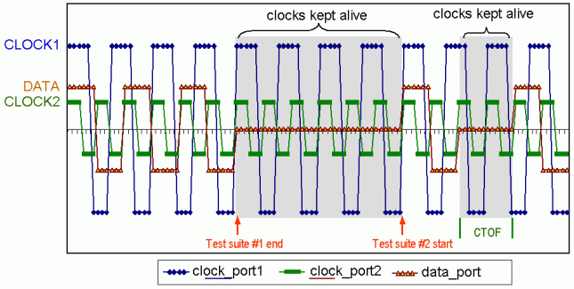

Multiple Continuous Clocks
The value of the multi-port setup is the added capability of the continuous execution of multiple clocks with different time periods, and almost any relationship to each other, between data sequencer executions.
For example:
1) Non-multiport setup
If we have 2 clocks of 8ns and 32ns required to run continuously, in a non-multiport setting it would be sufficient to set a tester period of 32ns for one clock and utilize an x4 mode device cycle for the 8ns clock.
If the clock periods are 8ns and 64ns, in a non-multiport setting, the tester period would have to be 64ns for the 64ns clock and an x8 would be required for the 8ns, which is not possible because of the available driving edges.
2) Multi-port setup
With multi-port software, one clock can be set to 8ns and the other to 64ns with a common period resolution of 4ns (Pin Scale system) without using more than two driving edges to define the clock and without the utilization of x-modes.
Keep in mind, that there are two main reasons for using multi-port for the keep alive mode:
- The first, is the need to keep the clock alive across multiple device clock domains.
- The second, is the need for sequencer decoupling, so that the effect of CTOF sequence will not impact the continuous execution of the clock signal.
The following figure also shows how two clocks can be running continuously while the data port is subjected to the effects of the CTOF sequences.

Functional changes
- Introduced before SmarTest 6.3.2